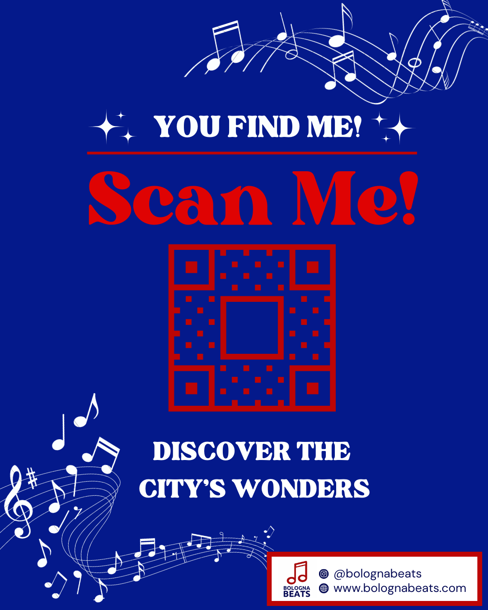

Ciao!
Per cominciare, permettimi di presentarmi: sono Giorgia e studio fuori sede a Bologna. Mi sono trasferita in questa città tre anni fa e all'inizio mi sentivo un po' smarrita. Per questo ho deciso di iniziare a ad esplorare Bologna per sentila un po' più familiare.
Mentre andavo alla scoperta degli scorci più suggestivi ho ascoltato davvero tanta musica e ho notato che se si presta attenzione questa città la si può ritrovare tra le strofe di molte canzoni.
Questo sito è un mio omaggio a Bologna, che ha saputo accogliermi e che ancora oggi riesce a sorprendermi. Il suo scopo è far vivere la città in un modo diverso a coloro che la visitano e far sentire meno sole le persone che ci abitano.
Eccoci qui, in questa pagina cercherò di spiegarti come ho pensato di far scoprire la città a coloro che capitano nel mio sito.
Ho creato tre mappe molto diverse tra loro: la prima ti offre l'opportunità di scoprire le meraviglie di Bologna, nella seconda troverai alcuni luoghi dove i ragazzi si riuniscono per trascorrere piacevoli serate insieme, mentre nell'ultima ci sono dei posti dove potrai rilassarti e goderti il panorama.
Ma non è tutto! Queste mappe non sono solo itinerari comuni, hanno un elemento che le unisce tutte: la musica! Per la città ho disseminato adesivi con un QR code, come quello che trovi qui a fianco, le posizioni saranno indicate anche sulle mappe per facilitarti ma trovarli da soli è molto più divertente! Scansionandoli, si aprirà una playlist su Spotify con alcune canzoni che potrai ascoltare, saranno le note che ti farnno da sottofondo mentre ti perdi nel paesaggio.
Il mio scopo è connettere le persone e credo che non ci sia modo migliore che farlo attraverso la musica. Ecco perché le playlist sono pubbliche, sentiti libero di aggiungere qualche canzone che ti fa pensare a Bologna o semplicemente che ti mette di buon umore!
Ora che conosci tutti i dettagli, non mi resta che augurarti una passeggiata indimenticabile!